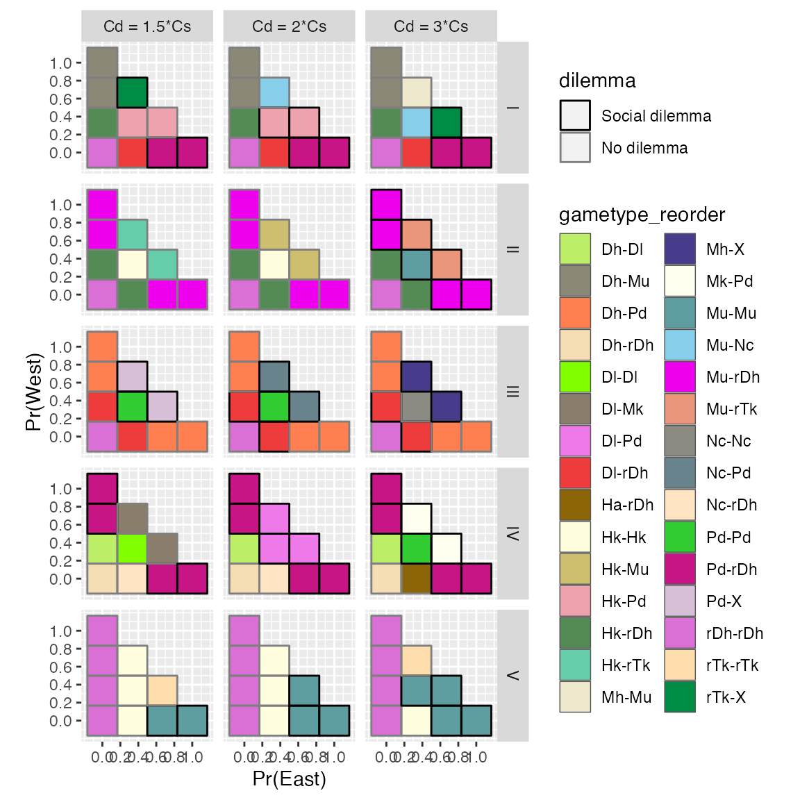

contamination-games-2x2.Rmd
library(nitratesgame)
library(dplyr)
library(tidyr)
library(purrr)
library(tibble)
library(ggplot2)
library(patchwork)A simple example
payouts <- get_2x2_payouts(tA = 1, tB = 1, Cs = 2, Cd = 3) # tA, tB - player types. Cs - cost to upgrade septic. Cd - cost of domestic well contamination
get_2x2_ggplot(payouts, equilibria = TRUE) # equilibria = TRUE will show the Nash Equilibrium (red outline) and Social Optimum (blue fill)Matrices of games
games <- crossing(tA = 1:4, tB = 1:4, nesting(tibble(Cs=c(2,3),Cd=c(3,2)))) %>%
# filter(tA <= tB) %>%
rowwise() %>%
mutate(payouts = list(get_2x2_payouts(tA=tA, tB=tB, Cs=Cs, Cd=Cd, pos = TRUE))) %>%
ungroup() %>%
mutate(plots = map(payouts, function(x) get_2x2_ggplot(x, TRUE)))
p_2x2_symmetric <- games %>% filter(Cd == 3, tA == tB) %>% pull(plots) %>%
patchwork::wrap_plots(ncol = 1)
p_2x2_symmetricNow create a grid of games using various groundwater configurations.
Games can be classified according to a “periodic table” of 2x2 games (Bruns, 2015). This
package has a built-in function (get_2x2_game_solutions)
for identifying most types of games from the periodic table. It also
identifies whether or not the game is a social dilemma (though this
aspect should be verified).
# The households / septic configurations
mixed_configurations <- tribble(~config, ~tA, ~tB, ~prob_name, ~dir,
1, 3, 1, "p1", "E",
1, 2, 4, "p2", "W",
1, 1, 1, "p3", "N/S",
2, 3, 2, "p1", "E",
2, 2, 3, "p2", "W",
2, 1, 1, "p3", "N/S",
3, 4, 1, "p1", "E",
3, 1, 4, "p2", "W",
3, 1, 1, "p3", "N/S",
4, 3, 1, "p1", "E",
4, 1, 3, "p2", "W",
4, 1, 2, "p3", "S",
5, 4, 4, "p1", "E",
5, 1, 1, "p2", "W",
5, 1, 1, "p3", "N/S")
# realization is the granularity along p1, p2, p3
realizations <- crossing(p1 = seq(0, 1, by = 1/3), p2 = seq(0, 1, by = 1/3)) %>%
filter(p1 + p2 <= 1) %>%
mutate(p3 = round(1 - p1 - p2,10),
id = row_number())
realizations_long <- realizations %>% pivot_longer(cols = matches("^p[1-4]$"), names_to = "prob_name", values_to = "prob")
mixed_solutions_prep1a <- mixed_configurations %>%
crossing(Cd = c(1.5,2,3), Cs = 1, realizations[,"id"]) %>%
arrange(id, prob_name) %>%
left_join(realizations_long, by = c("prob_name", "id")) %>%
rowwise() %>%
mutate(payouts = list(get_2x2_payouts(tA, tB, Cs, Cd, pos = TRUE))) %>%
group_by(config, id, Cd, Cs) %>%
summarize(mixed = list(get_2x2_weighted_payouts(payouts, prob)))
mixed_solutions_prep1b <- mixed_solutions_prep1a %>%
mutate(solutions = map(mixed, get_2x2_game_solutions),
NE = map(mixed, function(x) get_2x2_game_solutions(x, "NE")),
FB = map(mixed, function(x) get_2x2_game_solutions(x, "FB")),
NE_utility = map(solutions, function(x) min((x$UA + x$UB)[x$NE >= 0])),
FB_utility = map(solutions, function(x) max(x$UA + x$UB))) %>%
unnest(c("NE","FB", "NE_utility", "FB_utility")) %>%
ungroup()
mixed_solutions_prep2 <- mixed_solutions_prep1b %>%
mutate(FB_NE_diff = FB_utility - NE_utility,
game_dilemma = map(mixed, function(x) get_2x2_game_solutions(x, "dilemma")),
game_type = map(mixed, function(x) get_2x2_game_solutions(x, "type"))) %>%
left_join(realizations, by = c("id")) %>%
unnest(c("game_type","game_dilemma"))
reorder_gametypes <- function(gametype) {
types <- strsplit(gametype, "-")
type_reorder <- sapply(types, function(x) paste(sort(x), collapse = "-"))
}
mixed_solutions <- mixed_solutions_prep2 %>% ungroup() %>%
mutate(game_id = row_number(),
dilemma = factor(game_dilemma, c("social dilemma", "agreement"), c("Social dilemma", "No dilemma")),
gametype_reorder = reorder_gametypes(game_type),
Cd_lab = paste0("Cd = ",Cd,"*Cs")) %>%
mutate(config_fct = factor(config, levels = 1:5, labels = c("I", "II", "III", "IV", "V")))
rand_colors = grDevices::colors()[grep('gr(a|e)y', grDevices::colors(), invert = T)]
set.seed(120)
n <- 30
rand_colors26 <- sample(rand_colors, n)
ggplot(mixed_solutions) +
geom_tile(aes(p1, p2, fill = gametype_reorder), color = "#555555", size = 0.25) +
geom_tile(aes(p1, p2, color = dilemma), fill = NA, size = 0.5) +
scale_x_continuous("Pr(East)",breaks = seq(0,1, by =0.2)) +
scale_y_continuous("Pr(West)",breaks = seq(0,1, by =0.2)) +
scale_alpha_manual(values = c(0.4,1)) +
scale_color_manual(values = c("black", NA)) +
scale_fill_manual(values = rand_colors26) +
facet_grid(config_fct~Cd_lab) + coord_equal()